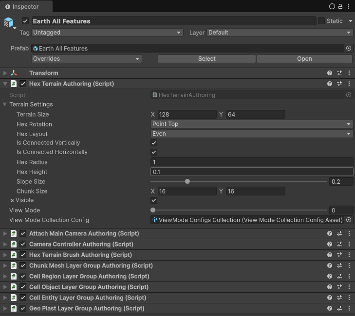
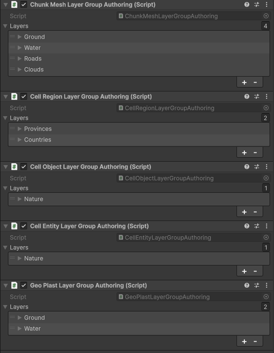
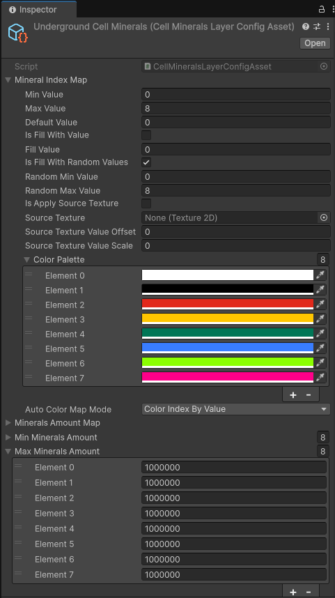
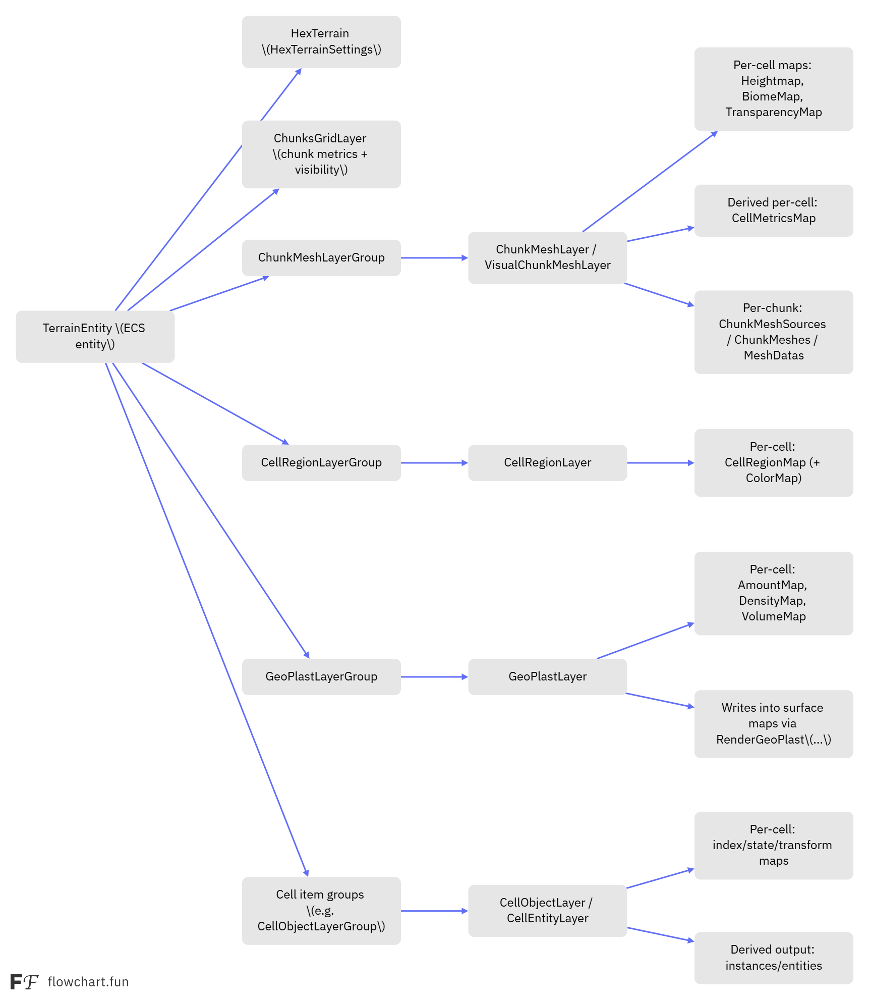

HexTerrains Framework Architecture
This page explains the overall architecture of the HexTerrains framework: how a terrain is represented, how data is stored, how it becomes visuals, and how to reason about the system when adding new features.
The core idea is data-driven terrain:
- Store a value per cell (int/float/bool/struct).
- Convert those values into derived data (metrics, color maps, mesh sources, instances).
- Render or otherwise consume the derived data.
1. The object model: TerrainEntity → HexTerrainLayerGroup → HexTerrainLayer → DataLayer
1.1 TerrainEntity (Unity ECS Entity)

A terrain is an ECS entity that carries:
HexTerrain(IComponentData) — the terrain’sHexTerrainSettings(grid size, chunk size, hex layout, connectivity, etc.).- Managed “component object” layers/groups (classes implementing
IComponentData) such as:ChunksGridLayerChunkMeshLayerGroupGeoPlastLayerGroupCellRegionLayerGroupCellObjectLayerGroup,CellEntityLayerGroup, etc. (depending on what the terrain supports)
Access pattern in the codebase is typically:
EntityManager.TryGetComponentData<HexTerrain>(terrainEntity, out var terrain)EntityManager.TryGetComponentObject<ChunkMeshLayerGroup>(terrainEntity, out var group)
The HexTerrainAPI / IHexTerrainAPI exists to hide ECS details from gameplay/editor tools and provide “get/set cell value” operations.
1.2 HexTerrainLayerGroup (a group of layers)

HexTerrainLayerGroup is a HexTerrainLayer that owns a list of child layers.
Key properties of a layer group:
- It holds multiple layers of the same conceptual type (e.g., multiple surfaces, multiple geo-plast layers).
- Layers can be retrieved by
HexTerrainLayerReference(by index, by name, or both). - Groups often implement orchestration methods such as “update all children” (sync, simulation, metrics calculation, mesh generation).
Examples:
ChunkMeshLayerGroup : HexTerrainLayerGroup<ChunkMeshLayer>GeoPlastLayerGroup : HexTerrainLayerGroup<GeoPlastLayer>CellRegionLayerGroup : HexTerrainLayerGroup<CellRegionLayer>
1.3 HexTerrainLayer (a single feature module)

A HexTerrainLayer is the unit of behavior and ownership. A layer:
- Owns some data (usually multiple
DataLayerinstances). - Knows how to initialize itself from
HexTerrainSettings. - Knows how to recalculate derived outputs (often via jobs).
- Implements lifecycle hooks:
Init(...)SetAllDirty(...)Cleanup()/CleanupAsync(...)CompleteAllJobs()- Optionally
CalculateColorMap(...) - Optionally
SerializeLayer(...)/DeserializeLayer(...)(viaISerializableTerrainLayer)
1.4 DataLayer (the storage + job synchronization primitive)
A DataLayer is the low-level storage building block. The important behaviors are:
- Stores the data (usually in native containers).
- Tracks job dependencies:
PrepareToRead()/PrepareToWrite()for job schedulingOpenToRead()/OpenToWrite()for immediate (main-thread) accessAddReadDependency(...)/AddWriteDependency(...)
- Tracks dirtiness:
IsDirtyand versioning- Chunk-level dirty state via “dirty chunk grids” (see below)
HexTerrains layers typically use chunk-aware data layers:
CellValueDataLayer<T>— one value per cellColorMapCellValueDataLayer<T>— one value per cell + derived per-cell color mapChunkValueDataLayer<T>— one value per chunk
2. “Maps”: thinking in per-cell values and per-chunk processing
2.1 Per-cell values (CellValueDataLayer<T>)
Most terrain features are expressed as:
T valuePerCell- indexed by
cellIndex(0..settings.CellsCount-1)
Common examples:
ChunkMeshLayer.HeightMap : ColorMapCellValueDataLayer<float>
“Height value per cell”ChunkMeshLayer.BiomeMap : ColorMapCellValueDataLayer<int>
“Biome index per cell”CellRegionLayer.CellRegionMap : ColorMapCellValueDataLayer<int>
“Region index per cell”GeoPlastLayer.AmountMap / DensityMap / VolumeMap : ColorMapCellValueDataLayer<float>
“Material-like scalar fields per cell”
This is the mental model: a grid of numbers.
2.2 Chunked updates (why “ChunkValueMaps” exist)
Even though values are per-cell, the terrain is processed in chunks for performance:
- Mesh generation is chunk-based (one mesh per chunk).
- Visibility is chunk-based (a chunk is visible or not).
- Dirty tracking is chunk-based (only recompute what changed).
So the framework keeps:
- A per-cell data array/list
- Plus metadata that marks which chunks are affected by edits
This is why “cell maps” usually sit on top of a chunked data layer base:
HexTerrainNativeListChunkedDataLayer<T>(HexTerrains) extends a generic chunked data layer (Core)- It stores
Settingsand supports chunk dirty grids + “dirty chunk hash sets” - It can merge dirty chunks across dependent maps (“if either input changed, recompute this output chunk”)
For chunk-only data (one item per chunk), the framework uses:
ChunkValueDataLayer<T>— conceptually aT valuePerChunk, indexed bychunkIndex
Example usage:
VisualChunkMeshLayer.MeshDatas : ChunkValueDataLayer<MeshDataArray>
“One mesh-data buffer per chunk (intermediate or final)”
3. How values turn into visuals (the repeating pattern)
Almost every “feature” in HexTerrains follows this pipeline:
- Authoritative per-cell values are edited (brushes, simulation, tools, loading).
- The edited data layers mark the affected chunks as dirty.
- Layers schedule jobs to compute derived data only for dirty chunks.
- A renderer consumes derived data:
- Procedural chunk meshes
- Instanced objects
- ECS entities
- Color map textures (view modes)
The important point: rendering is not the data. Rendering is a consumer of data.
4. Example: surface rendering via ChunkMeshLayer / VisualChunkMeshLayer
4.1 ChunkMeshLayer: per-cell surface data + metrics
A ChunkMeshLayer owns:
HeightMap : ColorMapCellValueDataLayer<float>BiomeMap : ColorMapCellValueDataLayer<int>TransparencyMap : CellValueDataLayer<bool>CellMetricsMap : CellMetricsDataLayer(derived)
Typical flow:
- Change
HeightMapand/orBiomeMap - Recompute
CellMetricsMapwithCalcCellMetrics(...) - Optionally compute color maps (
CalculateColorMap(...)) for view/debug
CellMetricsMap is the bridge from “values” to “geometry”: it caches per-cell transforms/positions/heights needed by mesh generation and object placement.
4.2 VisualChunkMeshLayer: turning cell metrics into meshes
A VisualChunkMeshLayer extends ChunkMeshLayer and adds chunk-level rendering outputs:
ChunkMeshSources(per chunk intermediate mesh source data)ChunkMeshes(per chunkMesh)- Optional
MeshDatas(per chunk mesh data buffers)
Key stages:
CalcDirtyMeshSources(...)
Marks chunk mesh sources dirty when their underlying cell data changed.CalcMeshSources(chunksGridLayer, ...)
For visible dirty chunks: schedule mesh generation jobs.CreateChunkMeshes(...)
Convert mesh source data intoMeshobjects (or mesh-data buffers), then draw.
Rendering step:
- Uses
ChunksGridLayer.ChunkVisibilityto draw only visible chunks. - Uses view mode → render config selection (
RenderConfigs/DefaultRenderConfig).
5. Example: “one value per cell shown as an object” via CellObjectLayer
The “cell item” family treats each cell as a slot that can hold a discrete thing:
int itemIndexper cell (what object is here?)- plus optional state + transform per cell (how it looks and where it sits within the cell)
CellObjectLayer is a consumer that:
- reads per-cell item data
- computes per-cell transforms (often using
ChunkMeshLayer.CellMetricsMap) - emits instanced render items grouped by mesh/material for fast rendering
This is the same architectural pattern:
- Data: item index/state/transform per cell
- Derived output: instance lists grouped for batching
- Renderer: bulk instancing renderer
See Cell Item Layers for the detailed “cell item” design.
6. Example: “scalar field volume” via GeoPlastLayer (rendered through a surface layer)
A GeoPlastLayer is a “material-like” simulation layer built from scalar fields:
AmountMap(how much “stuff” per cell)DensityMap(density factor)VolumeMap(derived:Amount * Density)BedrockHeightMap/CeilingHeightMap(derived heights)
Important architectural idea:
- GeoPlast does not need its own renderer type.
- It can be rendered onto an existing surface by writing/modifying the surface’s maps.
That is why GeoPlastLayer exposes:
RenderGeoPlast(ChunkMeshLayerGroup chunkMeshLayerList, ...)
Conceptually:
- GeoPlast computes its own per-cell fields (
VolumeMap, ceiling height, etc.). - GeoPlast “projects” those fields onto a target
ChunkMeshLayer(often by changing a height-like map, biome-like map, or both). - The target surface then regenerates meshes as usual.
So: GeoPlast changes values; VisualChunkMeshLayer turns values into meshes.
7. Example: “index per cell shown as a color” via CellRegionLayer
A CellRegionLayer provides a classic “index map” use case:
CellRegionMap : ColorMapCellValueDataLayer<int>
Each cell stores a region index.
Derived/secondary outputs:
RegionCells : NativeParallelMultiHashMapDataLayer<int, uint>
“Which cells belong to region R?”RegionSizes : NativeListDataLayer<uint>
“How large is region R?”
Visualization:
- Because
CellRegionMapis aColorMapCellValueDataLayer<int>, it can compute a per-cell color via a palette. - That color map can be pushed into a texture and shown in a view mode.
This matches the framework’s pattern:
- Authoritative: region index per cell
- Derived: color per cell, plus region membership structures
- Consumer: view mode texture, minimap, debug overlay, gameplay queries, etc.
8. View modes: “show me a particular map”
View modes are a standardized way to visualize “a data layer’s color map” as a texture.
UniversalViewModeConfigAsset demonstrates the approach:
- It selects a target layer + target map type (height, biome, region, geo-plast amount, etc.).
- It fetches the corresponding
ColorMap(CellColorsDataLayer) if that map hasIsColorMapEnabled == true. - It updates
Texture2Dbuffers by applying the color map.
So “view mode rendering” is not special rendering logic; it’s:
- data layer → color map → texture
9. Architecture diagram (mental model)

flowchart TD
TE["TerrainEntity (ECS entity)"] --> HT["HexTerrain (HexTerrainSettings)"]
TE --> CG["ChunksGridLayer (chunk metrics + visibility)"]
TE --> GM["ChunkMeshLayerGroup"]
GM --> CM["ChunkMeshLayer / VisualChunkMeshLayer"]
CM --> HM["Per-cell maps: Heightmap, BiomeMap, TransparencyMap"]
CM --> MET["Derived per-cell: CellMetricsMap"]
CM --> MS["Per-chunk: ChunkMeshSources / ChunkMeshes / MeshDatas"]
TE --> RG["CellRegionLayerGroup"]
RG --> RL["CellRegionLayer"]
RL --> RM["Per-cell: CellRegionMap (+ ColorMap)"]
TE --> PG["GeoPlastLayerGroup"]
PG --> PL["GeoPlastLayer"]
PL --> PM["Per-cell: AmountMap, DensityMap, VolumeMap"]
PL --> PR["Writes into surface maps via RenderGeoPlast(...)"]
TE --> OG["Cell item groups (e.g. CellObjectLayerGroup)"]
OG --> OL["CellObjectLayer / CellEntityLayer"]
OL --> OMAP["Per-cell: index/state/transform maps"]
OL --> OUT["Derived output: instances/entities"]
10. How to think when extending HexTerrains
When adding a new feature, decide these four things up front:
What is the authoritative per-cell value?
Example: “humidity per cell” (float), “road type per cell” (int), “blocked per cell” (bool).What derived data is needed?
Example: a color map for debugging, a mesh overlay, an instance list, a region membership table, etc.Which existing consumer can render it?
- Can it be shown as a color map texture? Use
ColorMapCellValueDataLayer<T>. - Can it be rendered as geometry? Project into a
ChunkMeshLayerand letVisualChunkMeshLayerdo mesh generation. - Can it be rendered as repeated objects? Use a cell-item layer style (instancing/entities).
- Can it be shown as a color map texture? Use
What is the dirty propagation path?
Make sure edits mark the right chunks dirty, and make derived jobs depend on the right source layers.
11. Summary
- A terrain is an ECS
TerrainEntity. - It owns multiple
HexTerrainLayerGroupcomponents (surface layers, region layers, geo-plast layers, item layers, etc.). - Each
HexTerrainLayerowns one or moreDataLayerinstances. - Most core gameplay/visual features reduce to: “a value per cell” plus a pipeline that converts it into visuals.
- Chunking + dirty tracking ensures only the affected chunks are recomputed.
- Rendering is a consumer of data: chunk meshes, instanced objects, ECS entities, and view-mode textures all read from the same underlying maps.